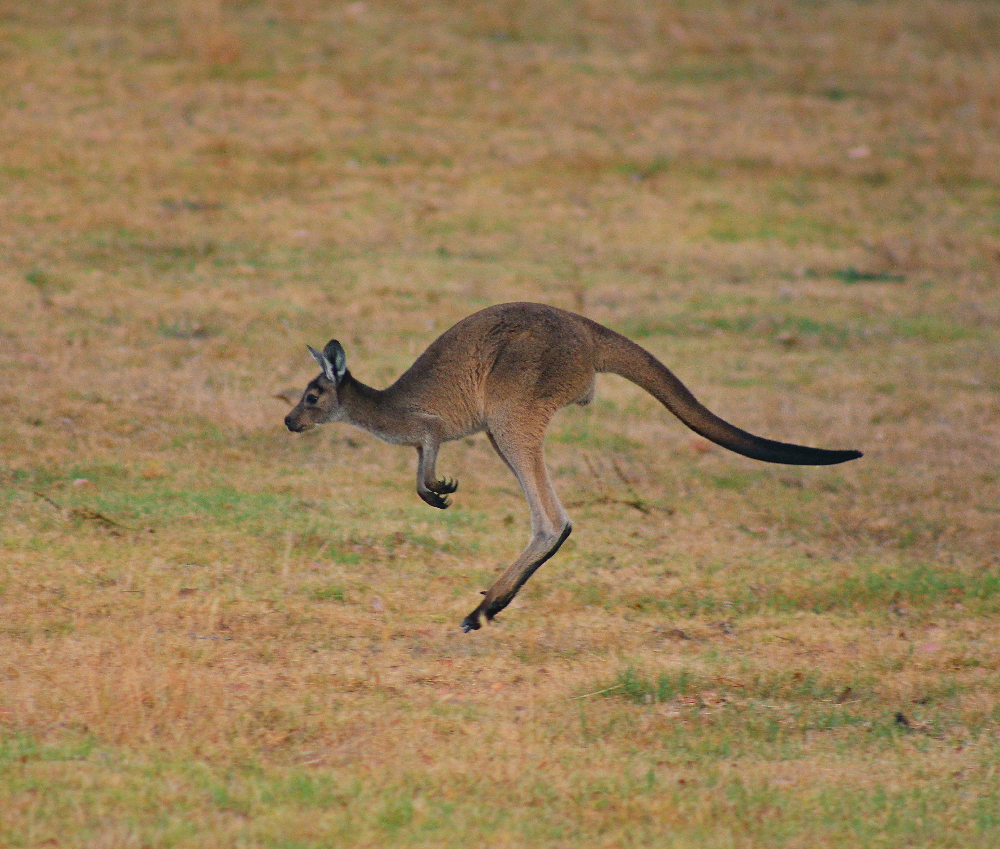
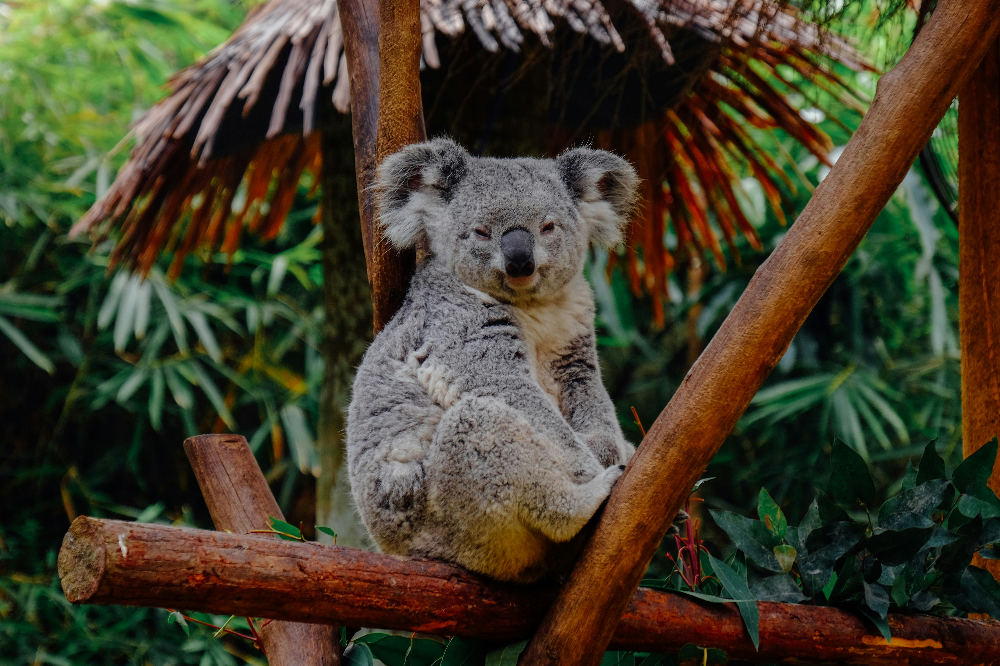
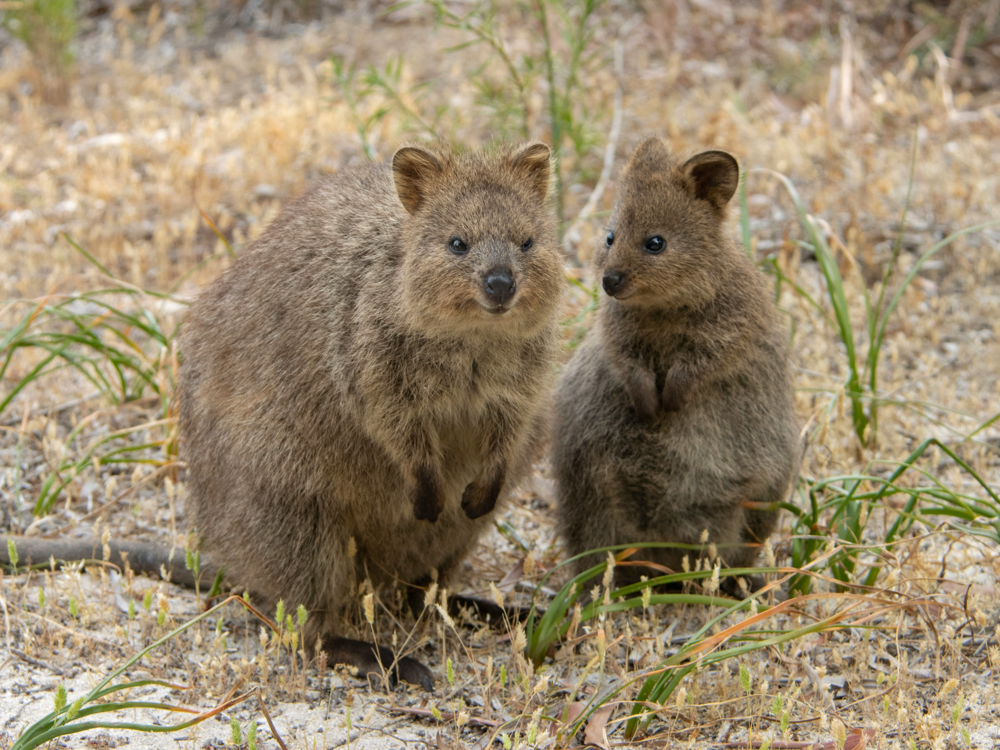

Kenguru
Kängurun är utan tvekan Australiens mest ikoniska djur och en levande symbol för landets fascinerande djurliv. Detta unika pungdjur är känt över hela världen för sin förmåga att hoppa fram i hög hastighet över de vidsträckta landskapen, med hjälp av sina kraftfulla bakben och sin muskulösa svans som ger perfekt balans. En magisk syn på den australiska landsbygden är att se en flock kängurur beta i solnedgången. Honan bär och skyddar omsorgsfullt sin unge, kallad en "joey", i sin pung tills den är redo för världen. Att få se detta ståtliga djur i sin naturliga miljö är en oförglömlig upplevelse under din resa "Down Under".

Koala
Koalan är utan tvekan ett av Australiens mest älskade djur och en riktig ikon för landets unika naturliv. Med sina fluffiga öron, runda nos och gosiga utseende smälter detta bedårande pungdjur hjärtan över hela världen. Koalorna tillbringar största delen av sina liv högt uppe i trädkronorna, där de i lugn och ro mumsar på eukalyptusblad. Eftersom denna diet är väldigt näringsfattig spenderar de upp till 20 timmar om dygnet med att bara sova och smälta maten! Att spana upp i träden och få syn på en sömnig koala i sin naturliga miljö är en av resans absolut mysigaste höjdpunkter.

Brisbane
Quokkan har blivit känd över hela världen som "världens lyckligaste djur" tack vare sitt oemotståndliga och ständiga leende. Detta lilla pungdjur är ungefär lika stort som en tamkatt och lever nästan uteslutande på den natursköna ön Rottnest Island, strax utanför Perth. De är kända för att vara otroligt nyfikna och vänliga mot människor, vilket har gjort "quokka-selfies" till ett viralt fenomen. Att hyra en cykel, trampa runt på ön och få möta dessa charmiga små varelser i sin naturliga miljö är en hjärtevärmande upplevelse som garanterat kommer att få dig att le tillbaka.

Perth
Emun är Australiens största fågel och en fascinerande, ståtlig varelse som stolt pryder det australiska riksvapnet tillsammans med kängurun. Trots att den saknar förmågan att flyga är emun extremt snabb på marken och kan sprinta i imponerande hastigheter upp emot 50 kilometer i timmen tack vare sina långa, kraftfulla ben. Dessa nyfikna fåglar strövar ofta över de enorma landskapen i outbacken och fascinerar besökare med sin imponerande storlek och sina mjuka, plym-liknande fjädrar. Att stöta på en emu på de öppna, röda slätterna är en mäktig påminnelse om Australiens vilda och uråldriga natur.